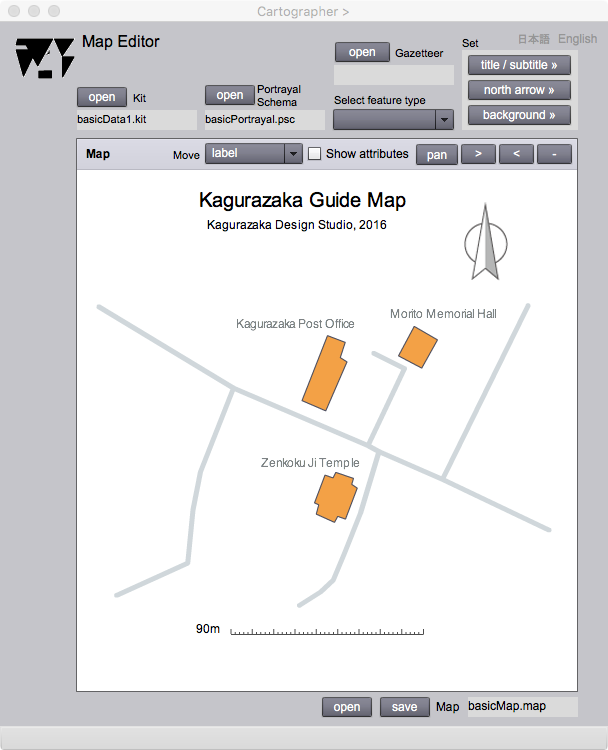
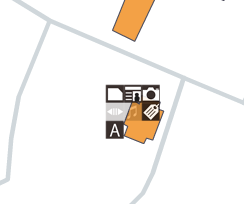

Map Editor
地図編集
はじめに
このページでは，描画スキーマに従う地図を表示することができます．地図のタイトル，バースケール，方位等，地図が備えているべき要素を加えてレイアウトすることができます．地物を指定して，情報を取り出すことが可能な地図は，対話型の地図 (interactive map)と呼ばれますが，Map editorでは，地物を指定して，それが持っている属性を，それぞれのメディアに合わせて情報ページとして表示したり，地図データとして永続化することができます．
以下，このページの操作法を説明します．
Map Editor

図１．Map Editorの操作画面
FIELDS
Kit
地図表示を行うキットをオープンすると，ここにファイス名が表示されます．
Portrayal Schema
地図表示のための規則である，描画スキーマをオープンすると，ここにファイル名が表示されます．
Gazetteer
地名索引をオープンすると，ここにファイル名が表示されます．
title/subtitle
このボタンを押すと，地図の表題と副題を設定することができます．
north arrow
このボタンを押すと，方位記号を設定することができます．
background
このボタンを押すと，地図の背景色を指定することができます．
Mapping Panel（編集可能）
このパネルに描画辞書の規則に従った地図が表示されます．
Move（編集可能）
表題や注記などを平行移動させたいときは，事前に何を移動させるかを，ここに指定します．すると，現在行える操作の名前が表示されます．指定した後，カーソルを地図上でドラッグすると，指定された要素が移動します．注記の場合は，事前にカーソルを，移動の対象となる注記に合わせてからドラッグします．
Map
地図データのオープン，セーブをすると，ここにファイル名が表示されます．
Select Feature Type
ここで地物の型を指定し，Show attributes チェックボックスをチェックすると，インスタンスがもつ属性の情報ページを表示することができます．詳細についてはShow attributesを参照してください．
BUTTONS
open (Kit)
キットをオープンします．
open (Portrayal Schema)
描画スキーマをオープンします．
open (Gazetteer)
地名索引をオープンします．
open (Map)
地図データをオープンします．
save (Map)
地図データをセーブします．
Show attributes
Select feature typeドロップダウンリストで地物型を指定し，次にこのチェックボックスをチェックして，カーソルを地図上に表示された地物に近づけると，地物が保持している属性の種類を示すピクトグラムボックスが表示されます．その中から適当なメディアのピクトグラムを指定すると，そのメディアに応じた情報ページが表示されます．

図１．地図上に表示されたピクトグラムボックス
>
このボタンを押すと表示縮尺が小さくなります．
<
このボタンを押すと，表示縮尺が大きくなります．
-
このボタンを押すと，表示される画面縮尺が，初期化されます．
fix / pan
このボタンを押すと，地図のドラッグが可能になり (pan)，もう一度押すと不可能になります (fix)．
スライダー
ベースマップの透明度を調整することができます．ベースマップの表示を目立たせないようにするときに，使用します．
日本語
今あなたが読んでいるドキュメントが表示されます．
English
You can read the tutorial written in English.